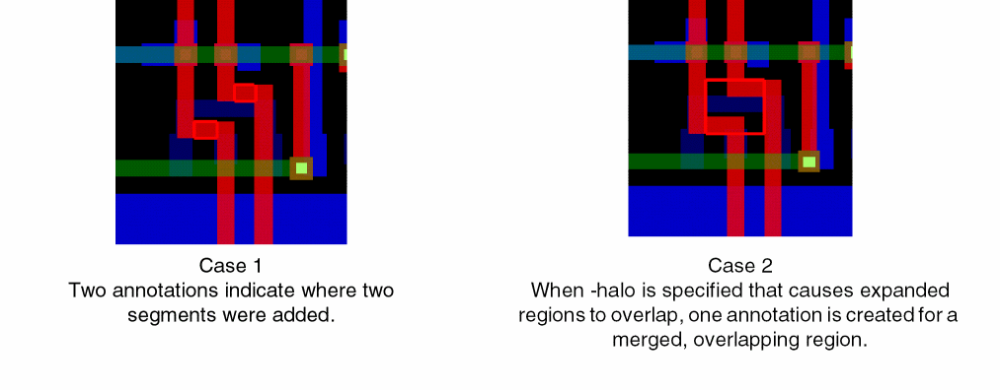

get_changed_area
get_changed_area
[ -halo f_micron ]
[ -tcl_list [ true | false ] ]
Description
Creates annotations for the rectangular areas within which wiring has changed during an ECO command sequence. You must first issue an eco_begin command before making changes that you want to track, then use this command to create annotations for the changed areas as layer annotation:viaOpt objects that will be listed by layer as Changed area:ECO changed area annotations in the Optimizations page of the Annotation Browser.
Arguments
The following figure shows the difference in results when the -halo argument is specified.

Related Topics
Return to top